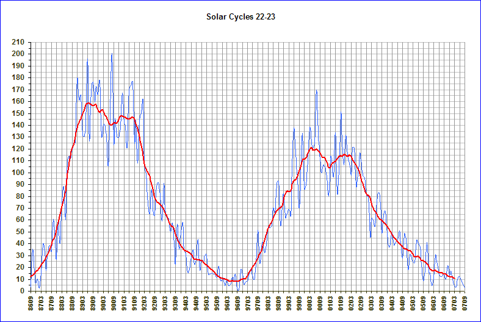

2007年 01.Jan-31.Dec
| Back Issues | Back Issues | Back Issues | Back Issues |
|---|---|---|---|
| Dec.01-31.2007 | Nov.01-30.2007 | Oct.01-31.2007 | Sep.01-30.2007 |
| Aug.01-31.2007 | Jul.01-31.2007 | Jun.01-30.2007 | May.01-31.2007 |
| Apr.01-30.2007 | Mar.01-31.2007 | Feb.01-28.2007 | Jan.01-31.2007 |


[Back Issues Jan-Dec.2007]
TIME:UTC(JST-09:00)
Report from JA1RJU (PM95sq)
31.Dec.2007(15:00b)
30.Dec.2007(15:00b)
29.Dec.2007(15:00b)
28.Dec.2007(15:00b)
27.Dec.2007(15:00b)
26.Dec.2007(15:00b)
25.Dec.2007(15:00b)
24.Dec.2007(15:00b)
23.Dec.2007(15:00b)
Report from JA1RJU (QM06cb/PM95sq)
22.Dec.2007(15:00c)
*ZL-TV 05:30- 45.24/25/26--
*VK-TV 05:00- 46.172 --
Report from JA1RJU (PM95sq/QM06cb)
21.Dec.2007(15:00b)
Report from JA1RJU (PM95sq)
20.Dec.2007(15:00b)
19.Dec.2007(15:00b)
18.Dec.2007(15:00b)
*VK-TV 05:00- 46.172 --
17.Dec.2007(15:00b)
15.Dec-16.Dec.2007(00:00a)
◎15.Dec-16.Dec.のリポートは休止します。
2007年 南東北6m DXer's 忘年会
14.Dec.2007(15:00b)
13.Dec.2007(15:00b)
12.Dec.2007(15:00c)
*VK-TV 04:50- 46.172 --
*ZL-TV 05:30- 45.250 --
VK6RSX/B 07:25- 50.304 CW Beacon weak
11.Dec.2007(15:00b)
*VK-TV 08:00- 46.172/240 -- weak
10.Dec.2007(15:00b)
09.Dec.2007(15:00b)
08.Dec.2007(15:00b)
07.Dec.2007(15:00b)
06.Dec.2007(15:00b)
05.Dec.2007(15:00b)
04.Dec.2007(15:00b)
01.Dec-03.Dec.2007(00:00a)
◎29.Nov-03.Dec.のリポートは休止します。
韓国・Gwangju(光州市/HL4)訪問=DS4EOI・Lee結婚式。
29.Nov-03.Dec.2007(00:00a)
◎29.Nov-03.Dec.のリポートは休止します。
28.Nov.2007(15:00b)
*VK-TV 06:40- 46.172 --
27.Nov.2007(15:00b)
*VK-TV 05:00- 46.172 --
*VK-TV 05:20- 46.172/240 -- strong!
26.Nov.2007(15:00b)
25.Nov.2007(15:00b)
24.Nov.2007(15:00b)
|
◎ARRL International EME Contest 2007-24/25th November #1. Object: Two-way communications via the earth-moon-earth path on any authorized amateur frequency above 50 MHz.(JA/TX=50.000-50.100MHz) #2. Date and Contest Period. Three full weekend 48-hour periods (0000 UTC on Saturday through 2359 UTC Sunday). The 2007 dates and designated bands for each date are: September 29-30 2304 MHz and Up October 27-28 50 MHz through 1296 MHz November 24-25 50 MHz through 1296 MHz 2007 ARRL International EME Competition Rules ------------------------------------------- |
23.Nov.2007(15:00b) 22.Nov.2007(15:00b) 21.Nov.2007(15:00b) 20.Nov.2007(15:00b) 19.Nov.2007(15:00b) 18.Nov.2007(15:00b) 17.Nov.2007(15:00b) 16.Nov.2007(15:00b) *ZL-TV 05:30 45.250 -- weak *VK-TV 05:30- 46.172/240 -- weak 15.Nov.2007(15:00b) 14.Nov.2007(15:00b) 13.Nov.2007(15:00b) 08-12.Nov.2007(00:00a) ◎08-12日のリポートは休止します (35th SEANET Convention=Lampang,Thailand)。 07.Nov.2007(15:00b) *VK-TV 06:40- 46.172 -- strong! 06.Nov.2007(15:00b) 05.Nov.2007(15:00b) *VK-TV 05:50- 46.172 -- weak 04.Nov.2007(15:00b) *VK-TV 05:40- 46.172 -- weak 03.Nov.2007(15:00b) 02.Nov.2007(15:00b) 01.Nov.2007(15:00b)
31.Oct.2007(15:00b) 30.Oct.2007(15:00b) 29.Oct.2007(15:00b) 28.Oct.2007(15:00b) 27.Oct.2007(15:00c) *VK-TV 03:00- 46.172/240 -- 26.Oct.2007(15:00c) *BY-TV 01:00- 49.750 -- *ZL-TV 04:00 45.230 -- weak *VK-TV 04:00- 46.172 --
|
◎ARRL International EME Contest 2007-27/28th October #1. Object: Two-way communications via the earth-moon-earth path on any authorized amateur frequency above 50 MHz. #2. Date and Contest Period. Three full weekend 48-hour periods (0000 UTC on Saturday through 2359 UTC Sunday). The 2007 dates and designated bands for each date are: September 29-30 2304 MHz and Up October 27-28 50 MHz through 1296 MHz November 24-25 50 MHz through 1296 MHz 2007 ARRL International EME Competition Rules ------------------------------------------- |
25.Oct.2007(15:00b)
24.Oct.2007(18:00c)
*BY-TV 01:00- 49.750 --
MM0AMW 17:28- 50.*** JT65A EME(IO75-PM96)-26dB
23.Oct.2007(15:00c)
*BY-TV 03:40- 49.750 --
*VK-TV 03:50- 46.172 --
22.Oct.2007(15:00b)
*VK-TV 05:20- 46.172/240 --
21.Oct.2007(15:00b)
*BY-TV 02:00- 49.750 --
20.Oct.2007(15:00b)
19.Oct.2007(15:00b)
18.Oct.2007(15:00b)
17.Oct.2007(15:00c)
*VK-TV 04:50- 46.172 --
16.Oct.2007(15:00b)
15.Oct.2007(15:00b)
14.Oct.2007(15:00b)
13.Oct.2007(15:00b)
12.Oct.2007(15:00b)
11.Oct.2007(15:00b)
10.Oct.2007(15:00b)
09.Oct.2007(15:00b)
Report from JA1RJU (QM06cb)
08.Oct.2007(15:00c)
9U0A 03:17- 50.*** JT65A EME(KI46-QM06ad)-31dB
07.Oct.2007(15:00b)
9U0A 01:10- 50.*** JT65A EME(KI46-QM06)NIL
06.Oct.2007(15:00b)
Report from JA1RJU (PM95sq)
05.Oct.2007(15:00b)
04.Oct.2007(15:00b)
03.Oct.2007(15:00b)
02.Oct.2007(15:00b)
01.Oct.2007(15:00b)
30.Sep.2007(15:00c)
*BY-TV 07:00- 49.750 --
DU7/PA0HIP 07:47 50.115 SSB strong!
DU7/PA0HIP 07:54 50.105 CW
29.Sep.2007(15:00b)
28.Sep.2007(15:00b)
27.Sep.2007(15:00b)
26.Sep.2007(15:00b)
25.Sep.2007(15:00b)
24.Sep.2007(15:00b)
*BY-TV 01:00- 49.750 --
23.Sep.2007(15:00b)
*BY-TV 07:00- 49.750 --
22.Sep.2007(15:00b)
*BY-TV 08:00- 49.750 --
21.Sep.2007(15:00b)
20.Sep.2007(15:00b)
*BY-TV 07:30- 49.750 --
*9M-TV 07:30- 48.240/260 --
Report from JA1RJU (PM95sq)
19.Sep.2007(15:00b)
*BY-TV 00:00- 49.750 --
18.Sep.2007(15:00c)
----------------------------------------------------------------------------
VQ9JK 50090.0 3B7C Beacon via MS into Diego Garcia 1533 17 Sep
----------------------------------------------------------------------------
17.Sep.2007(15:00b)
*BY-TV 10:00- 49.750 --
16.Sep.2007(15:00c)
*BY-TV 13:20- 49.750 --
BV2NT/B 13:20- 50.001 CW Beacon strong!
15.Sep.2007(15:00b)
Report from JA1RJU (QM06cb)
14.Sep.2007(15:00b)
Report from JA1RJU (PM95sq)
13.Sep.2007(15:00b)
*BY-TV 01:30- 49.750 --
12.Sep.2007(15:00b)
11.Sep.2007(15:00c)
DU7/PA0HIP 09:02 50.110 CW
10.Sep.2007(15:00c)
08-09.Sep.2007(00:00a)
◎今週末の(PM95sq)からのDXリポートは休止します(6SG Meeting=Fukushima)。
07.Sep.2007(15:00d)
*BY-TV 00:00- 49.750 --
BV2NT/B 01:50- 50.001 CW Beacon
VR2SIX/B 01:50- 50.075 CW Beacon
HL2IPL 02:51 50.110 SSB
06.Sep.2007(15:00d)
*BY-TV 00:30- 49.750 --
BD7KLO 01:30 50.110 SSB CQing
VR2SIX/B 01:40- 50.075 CW Beacon
BV2NT/B 01:40- 50.001 CW Beacon
VR10UW 01:41 50.110 CW
BA4XA 01:43 50.110 SSB CQing
BD7KLO 01:55 50.085 CW
HL2IPL 07:58 50.110 SSB
05.Sep.2007(15:00b)
*BY-TV 03:00- 49.750 --
04.Sep.2007(15:00c)
EI6IZ 14:30- 50.171 JT65A EME(IO53-QM06)-28dB Longpath
03.Sep.2007(15:00b)
02.Sep.2007(15:00b)
*BY-TV 01:30- 49.750 --
01.Sep.2007(15:00b)
31.Aug.2007(15:00b)
*BY-TV 03:30- 49.750 --
30.Aug.2007(15:00d)
DU7/PA0HIP 03:35 50.110 CW CQing
DU7/PA0HIP 06:53 50.110 CW CQing
DU7/PA0HIP 07:29 50.110 CW CQing strong!
DU7/PA0HIP 09:19 50.110 CW CQing
29.Aug.2007(15:00b)
28.Aug.2007(15:00b)
*BY-TV 00:30- 49.750 --
*9M-TV 00:30- 48.240/260 --
27.Aug.2007(15:00d)
*BY-TV 00:30- 49.750 --
*9M-TV 02:20- 48.260 --
*9M-TV 05:00- 48.240 --
BV2NT/B 06:20- 50.001 CW Beacon
9M4SIX/B 06:25- 50.005 CW Beacon
9M4SIX/B 06:55- 50.005 CW Beacon still good!
25-26.Aug.2007(00:00a)
◎今週末の(PM95sq)からのDXリポートは休止します(ハムフェア2007)。
24.Aug.2007(15:00d)
*BY-TV 00:30- 49.750 --
*9M-TV 00:30- 48.240/260 --
DS1PDF 00:56 50.110 SSB CQing
BA5DX/QRP 02:43 50.110 CW CQ...CQ...
BV2NT/B 06:00- 50.001 CW Beacon
23.Aug.2007(15:00d)
*BY-TV 07:00- 49.750 --
*9M-TV 07:50- 48.240 --
DS5KJR 08:14 50.110 CW
DU7/PA0HIP 08:16 50.110 CW CQing
VR2SIX/B 08:35- 50.075 CW Beacon
9M4SIX/B 08:35- 50.005 CW Beacon
BV2NT/B 08:55- 50.001 CW Beacon
VR10UW 09:20 50.110 CW CQing
VR10UW 09:50 50.110 CW CQing
VR2SIX/B 09:50- 50.075 CW Beacon
BV2NT/B 09:50- 50.001 CW Beacon
22.Aug.2007(15:00c)
*BY-TV 00:00- 49.750 --
*9M-TV 07:40- 48.240/260 --
21.Aug.2007(15:00d)
*BY-TV 00:30- 49.750 --
BV2NT/B 03:00- 50.001 CW Beacon
DU7/PA0HIP 07:38 50.110 CW/SSB
DU7/PA0HIP 08:11 50.110 CW CQing
20.Aug.2007(15:00d)
*BY-TV 01:00- 49.750 --
BD1LKK/4 05:50 50.110 SSB
DS5KJR 07:00 50.113 CW
HL1IBG 07:07 50.100 CW
19.Aug.2007(15:00d)
*BY-TV 03:00- 49.750 --
DU7/PA0HIP 05:28 50.110 CW
BV2NT/B 05:50- 50.001 CW Beacon
DU7/PA0HIP 06:16 50.110 CW CQ strong!
DU7/PA0HIP 07:40 50.110 CW CQing
18.Aug.2007(15:00b)
*BY-TV 07:00- 49.750 --
17.Aug.2007(15:00b)
*BY-TV 01:00- 49.750 --
16.Aug.2007(15:00c)
*BY-TV 00:00- 49.750 --
15.Aug.2007(15:00b)
*BY-TV 00:00- 49.750 --
14.Aug.2007(15:00b)
*BY-TV 06:00- 49.750 --
13.Aug.2007(15:00c)
*BY-TV 00:00- 49.750 --
*9M-TV 00:40- 48.240/260 --
(JA6YBR 00:40- 50.017 CW Beacon)
DS5KJR 00:50 50.110 CW
BV2NT/B 01:20- 50.001 CW Beacon
12.Aug.2007(15:00b)
*BY-TV 22:40- 49.750 --
BV2NT/B 22:40- 50.001 CW Beacon
***********************************
*BY-TV 00:00- 49.750 --
11.Aug.2007(15:00b)
*BY-TV 00:00- 49.750 --
BV2NT/B 02:00- 50.001 CW Beacon
10.Aug.2007(15:00b)
*BY-TV 05:00- 49.750 --
09.Aug.2007(15:00b)
*BY-TV 00:00- 49.750 --
08.Aug.2007(15:00c)
*BY-TV 00:00- 49.750 --
JT1CO 07:05 50.103 CW
07.Aug.2007(15:00b)
*BY-TV 09:00- 49.750 --
06.Aug.2007(15:00b)
03-05.Aug.2007(00:00a)
◎今週末の(PM95sq)からのリポートは休止します(原村・星まつり=長野県)。
02.Aug.2007(15:00b)
*BY-TV 00:00- 49.750 --
01.Aug.2007(15:00c)
*BY-TV 00:00- 49.750 --
VR2SIX/B 01:55- 50.075 CW Beacon
31.Jul.2007(15:00d)
*BY-TV 00:00- 49.750 --
BV2NT/B 02:20- 50.001 CW Beacon
VR2SIX/B 02:20- 50.075 CW Beacon
BV2NT/B 03:25- 50.001 CW Beacon
9M4SIX/B 03:25- 50.005 CW Beacon
VR2SIX/B 03:25- 50.075 CW Beacon
30.Jul.2007(15:00d)
*BY-TV 00:00- 49.750 --
BV2NT/B 06:30- 50.001 CW Beacon
BV2NT/B 07:00- 50.001 CW Beacon
VR2SIX/B 07:05- 50.075 CW Beacon
VR2SIX/B 08:30- 50.075 CW Beacon still open!
DS2KGJ 09:15 50.110/160 SSB
6K5AQY 09:18 50.160 SSB
DS2KGJ 09:36 50.130 SSB
28-29.Jul.2007(15:00b)
◎今週末のリポートは休止します。(KSSG Kagoshima)
27.Jul.2007(15:00b)
*BY-TV 00:00- 49.750 --
26.Jul.2007(15:00b)
*BY-TV 00:00- 49.750 --
25.Jul.2007(15:00b)
*BY-TV 01:00- 49.750 --
24.Jul.2007(15:00b)
*BY-TV 00:00- 49.750 --
23.Jul.2007(15:00c)
*BY-TV 00:00- 49.750 --
HL1IBG 02:23 50.100 CW
DS1PDF 02:31 50.100/150 CW/SSB with HL1IBG
22.Jul.2007(15:00e)
*BY-TV 00:00- 49.750 --
VR2SIX/B 01:30- 50.075 CW Beacon
XX9TTR 01:40 50.105 CW QSL via VR2RR
BM2/JF3EFL 02:10 50.120 SSB
XX9TTR 02:17 50.105 CW
BW2/JA3AQM 02:19 50.120 CW
BW2/JR3PIO 02:49 50.120 SSB
XX9TTR 03:30 50.105 CW
DS1NSR 05:10 50.110 CW
DS1PDF 05:21 50.091 CW
6K5AQY 05:27 50.091 CW
6K5AYC 05:37 50.110/108 CW
BW2/JA3FWU 05:38 50.110 SSB
6K2DIO 06:00 50.095 CW
HL1IBG 06:06 50.105 CW
6M0V 06:38 50.122 SSB
JE7IZM/JD1 06:40 50.148 SSB
HL1AEY 08:37 50.110 CW
21.Jul.2007(15:00b)
*BY-TV 00:00- 49.750 --
(UT7QF 05:30 50.087 CW QSO in QM06)
20.Jul.2007(15:00b)
*BY-TV 00:00- 49.750 --
VR2SIX/B 03:20- 50.075 CW Beacon
19.Jul.2007(15:00b)
*BY-TV 01:00- 49.750 --
18.Jul.2007(15:00c)
*BY-TV 00:00- 49.750 --
VR2SIX/B 01:45- 50.075 CW Beacon
BA8AG 01:57 50.102 CW
DS1PDF 02:32 50.110 CW
HL1IBG 07:05 50.099 CW
DS1PDF 07:05 50.099 CW
17.Jul.2007(15:00c)
*BY-TV 00:00- 49.750 --
(JA6YBR 01:45- 50.017 CW Beacon Miyazaki)
VR2SIX/B 01:45- 50.075 CW Beacon
VR2SIX/B 07:20- 50.075 CW Beacon again!
16.Jul.2007(15:00c)
*BY-TV 00:00- 49.750 --
(OX2A 01:00 50.168/068 JT65a EME QSO JH2=PM94-GP47ta)
BV2NT/B 02:00- 50.001 CW Beacon
15.Jul.2007(15:00c)
*BY-TV 00:00- 49.750 --
14.Jul.2007(15:00e)
*BY-TV 00:00- 49.750 --
VR2SIX/B 01:00- 50.075 CW Beacon
VR10VTN 01:05 50.110 CW
(OX2A 01:45 50.146/073 JT65a EME QSO JN1=QM06-GP47ta)
BV2NT/B 02:25- 50.001 CW Beacon
UN8GC 03:45 50.108 CW good sig!
UN1SIX/B 04:00- 50.0232 CW Beacon
JE7IZM/JD1 04:15 50.148 SSB
(T88PT 06:00 50.115 CW JA1-0)
BV2NT/B 06:15- 50.001 CW Beacon
HL2SU 07:22 50.102 CW
DS1BDF 07:22 50.102 CW
*P5-AM 08:20- 48.250 AM (Music=HFxharmonics)
BD5HAM 09:35 50.110 SSB
Report from JA1RJU (QM06cb)
13.Jul.2007(15:00d)
*BY-TV 00:00- 49.750 --
(OX2A 03:12 50.236/068 JT65a EME QSO JG2=PM84-GP47ta=1st JA-OX & Zone #40)
BV2NT/B 06:10- 50.001 CW Beacon
VR2SIX/B 06:10- 50.075 CW Beacon
DS2KGJ 08:38 50.110/130 SSB
12.Jul.2007(15:00c)
*BY-TV 00:00- 49.750 --
(UR5MID 05:25 50.100 CW JA8)
(UT7IL 05:27 50.102 CW JA8)
(OH2MA 06:54 50.097 CW JA8.0)
(5B4FL 07:45 50.107 CW JA8)
BV2NT/B 08:55- 50.001 CW Beacon
Report from JA1RJU (PM95sq)
11.Jul.2007(15:00b)
*BY-TV 00:00- 49.750 --
(Nothing EU Open Today in JA1=PM95sq)
10.Jul.2007(15:00c)
*9M-TV 00:00- 48.240/260 --
*BY-TV 00:00- 49.750 --
(Nothing EU Open Today in JA1=PM95sq)
09.Jul.2007(15:00c)
*9M-TV 00:00- 48.240/260 --
*BY-TV 00:00- 49.750 --
BV2NT/B 04:58- 50.001 CW Beacon
(Nothing EU Open Today in JA1=PM95sq)
08.Jul.2007(15:00d)
*9M-TV 22:00- 48.240/260 --
*BY-TV 22:00- 49.750 -- (6m AND DOWN Contest)
BD9BA 23:15 50.110 CW/SSB CQing
BV2NT/B 23:30- 50.001 CW Beacon
VR2SIX/B 23:30- 50.075 CW Beacon
***********************************
BV2NT/B 00:00- 50.001 CW Beacon
VR2SIX/B 00:00- 50.075 CW Beacon
VR10VTN 00:20 50.115 SSB
BD7OH 00:20 50.135 SSB
BX2AB 00:25 50.101 CW
BX6AD 01:18 50.110 CW
BV2NT/B 02:30- 50.001 CW Beacon
VR2SIX/B 02:30- 50.075 CW Beacon
(UR5EDU 07:03 50.097 CW JA7)
(SV1DH 07:52 50.093 CW JA4.0)
IT9RZR 08:18 50.098 CW weak
HL2AEJ 08:35 50.112 CW
(9H1BT 08:36 50.090 CW JA1-9)
07.Jul.2007(15:00d)
*9M-TV 00:00- 48.240/260 --
*BY-TV 00:00- 49.750 --
BV2NT/B 00:00- 50.001 CW Beacon
BG3NHK 13:24 50.110 SSB CQing
06.Jul.2007(15:00d)
*9M-TV 00:00- 48.240/260 --
*BY-TV 00:00- 49.750 --
VR2SIX/B 01:40- 50.075 CW Beacon
BA8AG 02:31 50.102 CW
BV2NT/B 05:00- 50.001 CW Beacon
VR2SIX/B 05:18- 50.075 CW Beacon
*BY-TV 08:00- 49.750 --
*P5-AM 08:20- 48.250 AM (HFxharmonics)
BV2NT/B 09:27- 50.001 CW Beacon
05.Jul.2007(15:00d)
*9M-TV 00:00- 48.240/260 --
*BY-TV 00:00- 49.750 --
BV2NT/B 01:10- 50.001 CW Beacon
VR2SIX/B 01:10- 50.075 CW Beacon
VR2SIX/B 05:10- 50.075 CW Beacon
BA8AG 05:12 50.102 CW
04.Jul.2007(15:00d)
*9M-TV 00:00- 48.240/260 --
*BY-TV 00:00- 49.750 --
BV2NT/B 01:00- 50.001 CW Beacon
VR2SIX/B 02:00- 50.075 CW Beacon
BA8AG 03:12 50.102 CW
VR10UW 03:25 50.106 CW
(A61Q 04:07 50.102 CW JA8)
9M4SIX/B 05:00- 50.005 CW Beacon
VR2SIX/B 06:30- 50.075 CW Beacon
03.Jul.2007(15:00d)
*9M-TV 00:00- 48.240/260 --
*BY-TV 00:00- 49.750 --
BV2NT/B 01:00- 50.001 CW Beacon
9M4SIX/B 01:00- 50.005 CW Beacon
VR2SIX/B 01:00- 50.075 CW Beacon
BV2NT/B 06:00- 50.001 CW Beacon
9M4SIX/B 06:00- 50.005 CW Beacon
(JA6YBR/B 06:00- 50.017 CW Beacon Miyazaki)
(7J6CCU/B 06:00- 50.038 CW Beacon Okinawa=PL36)
02.Jul.2007(15:00d)
*9M-TV 00:00- 48.240/260 --
*BY-TV 00:00- 49.750 --
BV2NT/B 00:00- 50.001 CW Beacon
(7J6CCU/B 00:00- 50.038 CW Beacon Okinawa=PL36)
VR2SIX/B 00:40- 50.075 CW Beacon
HL3IB 06:26 50.098 CW
DS1REE 07:26 50.105 CW
IZ1EPM 07:29 50.099 CW
9M4SIX/B 09:30- 50.005 CW Beacon
01.Jul.2007(15:00e)
KH6HME/B 22:30- 50.061 CW Beacon weak
***********************************
BV2NT/B 00:00- 50.001 CW Beacon
VR2SIX/B 00:00- 50.075 CW Beacon
VR10XMQ 00:15 50.110/160 SSB VR2(H.K) 10th anniversary of return to China.
VR10XMT 00:30 50.172 SSB (VR2・香港、中国返還10周年記念)
VR10UW 00:31 50.101 CW
VR10BG 00:50 50.105 CW
KH6HME/B 06:20- 50.061 CW Beacon
BV2NT/B 06:30- 50.001 CW Beacon
V73SIX/B 07:40- 50.0138 CW Beacon
9M4SIX/B 08:05- 50.005 CW Beacon
Report from JA1RJU (PM95sq)
31.Jul.2007(15:00d)
*BY-TV 00:00- 49.750 --
BV2NT/B 02:20- 50.001 CW Beacon
VR2SIX/B 02:20- 50.075 CW Beacon
BV2NT/B 03:25- 50.001 CW Beacon
9M4SIX/B 03:25- 50.005 CW Beacon
VR2SIX/B 03:25- 50.075 CW Beacon
30.Jul.2007(15:00d)
*BY-TV 00:00- 49.750 --
BV2NT/B 06:30- 50.001 CW Beacon
BV2NT/B 07:00- 50.001 CW Beacon
VR2SIX/B 07:05- 50.075 CW Beacon
VR2SIX/B 08:30- 50.075 CW Beacon still open!
DS2KGJ 09:15 50.110/160 SSB
6K5AQY 09:18 50.160 SSB
DS2KGJ 09:36 50.130 SSB
28-29.Jul.2007(15:00b)
◎今週末のリポートは休止します。(KSSG Kagoshima)
27.Jul.2007(15:00b)
*BY-TV 00:00- 49.750 --
26.Jul.2007(15:00b)
*BY-TV 00:00- 49.750 --
25.Jul.2007(15:00b)
*BY-TV 01:00- 49.750 --
24.Jul.2007(15:00b)
*BY-TV 00:00- 49.750 --
23.Jul.2007(15:00c)
*BY-TV 00:00- 49.750 --
HL1IBG 02:23 50.100 CW
DS1PDF 02:31 50.100/150 CW/SSB with HL1IBG
22.Jul.2007(15:00e)
*BY-TV 00:00- 49.750 --
VR2SIX/B 01:30- 50.075 CW Beacon
XX9TTR 01:40 50.105 CW QSL via VR2RR
BM2/JF3EFL 02:10 50.120 SSB
XX9TTR 02:17 50.105 CW
BW2/JA3AQM 02:19 50.120 CW
BW2/JR3PIO 02:49 50.120 SSB
XX9TTR 03:30 50.105 CW
DS1NSR 05:10 50.110 CW
DS1PDF 05:21 50.091 CW
6K5AQY 05:27 50.091 CW
6K5AYC 05:37 50.110/108 CW
BW2/JA3FWU 05:38 50.110 SSB
6K2DIO 06:00 50.095 CW
HL1IBG 06:06 50.105 CW
6M0V 06:38 50.122 SSB
JE7IZM/JD1 06:40 50.148 SSB
HL1AEY 08:37 50.110 CW
21.Jul.2007(15:00b)
*BY-TV 00:00- 49.750 --
(UT7QF 05:30 50.087 CW QSO in QM06)
20.Jul.2007(15:00b)
*BY-TV 00:00- 49.750 --
VR2SIX/B 03:20- 50.075 CW Beacon
19.Jul.2007(15:00b)
*BY-TV 01:00- 49.750 --
18.Jul.2007(15:00c)
*BY-TV 00:00- 49.750 --
VR2SIX/B 01:45- 50.075 CW Beacon
BA8AG 01:57 50.102 CW
DS1PDF 02:32 50.110 CW
HL1IBG 07:05 50.099 CW
DS1PDF 07:05 50.099 CW
17.Jul.2007(15:00c)
*BY-TV 00:00- 49.750 --
(JA6YBR 01:45- 50.017 CW Beacon Miyazaki)
VR2SIX/B 01:45- 50.075 CW Beacon
VR2SIX/B 07:20- 50.075 CW Beacon again!
16.Jul.2007(15:00c)
*BY-TV 00:00- 49.750 --
(OX2A 01:00 50.168/068 JT65a EME QSO JH2=PM94-GP47ta)
BV2NT/B 02:00- 50.001 CW Beacon
15.Jul.2007(15:00c)
*BY-TV 00:00- 49.750 --
14.Jul.2007(15:00e)
*BY-TV 00:00- 49.750 --
VR2SIX/B 01:00- 50.075 CW Beacon
VR10VTN 01:05 50.110 CW
(OX2A 01:45 50.146/073 JT65a EME QSO JN1=QM06-GP47ta)
BV2NT/B 02:25- 50.001 CW Beacon
UN8GC 03:45 50.108 CW good sig!
UN1SIX/B 04:00- 50.0232 CW Beacon
JE7IZM/JD1 04:15 50.148 SSB
(T88PT 06:00 50.115 CW JA1-0)
BV2NT/B 06:15- 50.001 CW Beacon
HL2SU 07:22 50.102 CW
DS1BDF 07:22 50.102 CW
*P5-AM 08:20- 48.250 AM (Music=HFxharmonics)
BD5HAM 09:35 50.110 SSB
Report from JA1RJU (QM06cb)
13.Jul.2007(15:00d)
*BY-TV 00:00- 49.750 --
(OX2A 03:12 50.236/068 JT65a EME QSO JG2=PM84-GP47ta=1st JA-OX & Zone #40)
BV2NT/B 06:10- 50.001 CW Beacon
VR2SIX/B 06:10- 50.075 CW Beacon
DS2KGJ 08:38 50.110/130 SSB
12.Jul.2007(15:00c)
*BY-TV 00:00- 49.750 --
(UR5MID 05:25 50.100 CW JA8)
(UT7IL 05:27 50.102 CW JA8)
(OH2MA 06:54 50.097 CW JA8.0)
(5B4FL 07:45 50.107 CW JA8)
BV2NT/B 08:55- 50.001 CW Beacon
Report from JA1RJU (PM95sq)
11.Jul.2007(15:00b)
*BY-TV 00:00- 49.750 --
(Nothing EU Open Today in JA1=PM95sq)
10.Jul.2007(15:00c)
*9M-TV 00:00- 48.240/260 --
*BY-TV 00:00- 49.750 --
(Nothing EU Open Today in JA1=PM95sq)
09.Jul.2007(15:00c)
*9M-TV 00:00- 48.240/260 --
*BY-TV 00:00- 49.750 --
BV2NT/B 04:58- 50.001 CW Beacon
(Nothing EU Open Today in JA1=PM95sq)
08.Jul.2007(15:00d)
*9M-TV 22:00- 48.240/260 --
*BY-TV 22:00- 49.750 -- (6m AND DOWN Contest)
BD9BA 23:15 50.110 CW/SSB CQing
BV2NT/B 23:30- 50.001 CW Beacon
VR2SIX/B 23:30- 50.075 CW Beacon
***********************************
BV2NT/B 00:00- 50.001 CW Beacon
VR2SIX/B 00:00- 50.075 CW Beacon
VR10VTN 00:20 50.115 SSB
BD7OH 00:20 50.135 SSB
BX2AB 00:25 50.101 CW
BX6AD 01:18 50.110 CW
BV2NT/B 02:30- 50.001 CW Beacon
VR2SIX/B 02:30- 50.075 CW Beacon
(UR5EDU 07:03 50.097 CW JA7)
(SV1DH 07:52 50.093 CW JA4.0)
IT9RZR 08:18 50.098 CW weak
HL2AEJ 08:35 50.112 CW
(9H1BT 08:36 50.090 CW JA1-9)
07.Jul.2007(15:00d)
*9M-TV 00:00- 48.240/260 --
*BY-TV 00:00- 49.750 --
BV2NT/B 00:00- 50.001 CW Beacon
BG3NHK 13:24 50.110 SSB CQing
06.Jul.2007(15:00d)
*9M-TV 00:00- 48.240/260 --
*BY-TV 00:00- 49.750 --
VR2SIX/B 01:40- 50.075 CW Beacon
BA8AG 02:31 50.102 CW
BV2NT/B 05:00- 50.001 CW Beacon
VR2SIX/B 05:18- 50.075 CW Beacon
*BY-TV 08:00- 49.750 --
*P5-AM 08:20- 48.250 AM (HFxharmonics)
BV2NT/B 09:27- 50.001 CW Beacon
05.Jul.2007(15:00d)
*9M-TV 00:00- 48.240/260 --
*BY-TV 00:00- 49.750 --
BV2NT/B 01:10- 50.001 CW Beacon
VR2SIX/B 01:10- 50.075 CW Beacon
VR2SIX/B 05:10- 50.075 CW Beacon
BA8AG 05:12 50.102 CW
04.Jul.2007(15:00d)
*9M-TV 00:00- 48.240/260 --
*BY-TV 00:00- 49.750 --
BV2NT/B 01:00- 50.001 CW Beacon
VR2SIX/B 02:00- 50.075 CW Beacon
BA8AG 03:12 50.102 CW
VR10UW 03:25 50.106 CW
(A61Q 04:07 50.102 CW JA8)
9M4SIX/B 05:00- 50.005 CW Beacon
VR2SIX/B 06:30- 50.075 CW Beacon
03.Jul.2007(15:00d)
*9M-TV 00:00- 48.240/260 --
*BY-TV 00:00- 49.750 --
BV2NT/B 01:00- 50.001 CW Beacon
9M4SIX/B 01:00- 50.005 CW Beacon
VR2SIX/B 01:00- 50.075 CW Beacon
BV2NT/B 06:00- 50.001 CW Beacon
9M4SIX/B 06:00- 50.005 CW Beacon
(JA6YBR/B 06:00- 50.017 CW Beacon Miyazaki)
(7J6CCU/B 06:00- 50.038 CW Beacon Okinawa=PL36)
02.Jul.2007(15:00d)
*9M-TV 00:00- 48.240/260 --
*BY-TV 00:00- 49.750 --
BV2NT/B 00:00- 50.001 CW Beacon
(7J6CCU/B 00:00- 50.038 CW Beacon Okinawa=PL36)
VR2SIX/B 00:40- 50.075 CW Beacon
HL3IB 06:26 50.098 CW
DS1REE 07:26 50.105 CW
IZ1EPM 07:29 50.099 CW
9M4SIX/B 09:30- 50.005 CW Beacon
01.Jul.2007(15:00e)
KH6HME/B 22:30- 50.061 CW Beacon weak
***********************************
BV2NT/B 00:00- 50.001 CW Beacon
VR2SIX/B 00:00- 50.075 CW Beacon
VR10XMQ 00:15 50.110/160 SSB VR2(H.K) 10th anniversary of return to China.
VR10XMT 00:30 50.172 SSB (VR2・香港、中国返還10周年記念)
VR10UW 00:31 50.101 CW
VR10BG 00:50 50.105 CW
KH6HME/B 06:20- 50.061 CW Beacon
BV2NT/B 06:30- 50.001 CW Beacon
V73SIX/B 07:40- 50.0138 CW Beacon
9M4SIX/B 08:05- 50.005 CW Beacon
Report from JA1RJU (QM06cb)
30.Jun.2007(15:00d)
BV2NT/B 22:40- 50.001 CW Beacon
***********************************
BV2NT/B 00:00- 50.001 CW Beacon
BV2NT/B 03:30- 50.001 CW Beacon
VR2SIX/B 03:30- 50.075 CW Beacon
JE7IZM/JD1 04:20 50.135 SSB
(UT7QF 05:25 50.112 CW JA6)
(UR5EDU 05:32 50.091 CW JA6)
BV2NT/B 06:45- 50.001 CW Beacon
9M4SIX 06:45- 50.005 CW Beacon
DL2JRM/BY4RR 07:25 50.102 CW
BG1LKK/4 07:30 50.115 SSB
DG8SBR 08:05 50.110 CW
VR2XMT 08:07 50.110 SSB
Report from JA1RJU (QM06cb)
29.Jun.2007(15:00c)
US was not opened this morning.
***********************************
*9M-TV 00:00- 48.240/260 --
*BY-TV 00:00- 49.750 --
VR2SIX/B 00:30- 50.075 CW Beacon
(JA6YBR 00:30- 50.017 CW strong!(Beacon Miyazaki)
VR2BG 01:05 50.100 CW
VR2XMT 01:15 50.110/115 SSB
BV2NT/B 01:15- 50.001 CW Beacon
BV2NT/B 03:15- 50.001 CW Beacon
VR2SIX/B 03:15- 50.075 CW Beacon
BV2NT/B 04:50- 50.001 CW Beacon still into QM06
VR2SIX/B 04:50- 50.075 CW Beacon still into QM06
28.Jun.2007(15:00d)
US was not opened this morning.
***********************************
*BY-TV 00:00- 49.750 --
BV2NT/B 00:40- 50.001 CW Beacon
VR2SIX/B 00:40- 50.075 CW Beacon
(UT7UV 07:05 50.087 CW JA8)
UR5EDU 07:13 50.097 CW CQing
*P5-AM 08:10- 48.250 AM (Music=HFxharmonics)
(UT7UV 08:10 50.125 SSB JA8)
27.Jun.2007(15:00e)
BV2NT/B 20:40- 50.001 CW Beacon
*BY-TV 21:40- 49.750 --
W7CNK 22:30 50.102 CW OK
KM0A 22:51 50.092 CW MO
KA9CFD 22:52 50.092 CW IL
W5KI 22:54 50.092 CW AR(Arkansas)
K5XX 22:56 50.092 CW TX
K0JY 22:58 50.092 CW CO
K9SM 22:59 50.092 CW IL
N0KE 23:00 50.092 CW CO
WD5K 23:01 50.092 CW TX
N5ORT 23:02 50.092 CW MS(Mississippi)
W4UDH 23:03 50.092 CW MS(Mississippi)
K7JE 23:07 50.092 CW AZ
W0FY 23:09 50.092 CW MO
K5CM 23:12 50.092 CW OK
K0GU 23:12 50.092 CW CO
W7USA 23:14 50.092 CW AZ
K5XX 23:16 50.092 CW --
K0EU 23:17 50.092 CW CO
N2IC 23:18 50.092 CW NM(/5 New Mexico)
AA5JG 23:19 50.092 CW OK
W7RV 23:22 50.092 CW AZ
K5XX 23:23 50.092 CW --
W7/DL1UF 23:25 50.092 CW AZ
(K2UU 23:25 50.105 CW NY QSO with JA7)
K0HA 23:35 50.092 CW NE(Nebraska)
W5KI 23:39 50.092 CW --
W0MY 23:42 50.092 CW CO
***********************************
N7CW 00:09 50.092 CW AZ
K3TKJ 00:15 50.092 CW DE(Delaware=R)
WA6PEV 00:16 50.092 CW CA
UT4UO 04:53 50.097 CW
HA0DU 05:00 50.096 CW
9A2KL 05:14 50.092 CW
5B4FL 05:20 50.099 CW
HA0DU 05:28 50.096 CW good sig!
UT4UO 05:44 50.098 CW
HA0DU 05:50 50.096 CW strong!
UT7QF 05:57 50.091 CW
HA0DU 06:28 50.096 CW CQing
DK1MAX 06:34 50.101 CW
HA3UU 06:50 50.092 CW
DK3WG 06:59 50.097 CW
DK3WG 07:03 50.097 CW
HA3UU 07:06 50.093 CW 599 strong!
S57RR 08:20 50.089 CW CQing
DK3WG 08:23 50.097 CW CQing
HA1YA 08:35 50.099 CW
DL2DXA 08:53 50.100 CW
BG1LKK 11:00 50.110 SSB
26.Jun.2007(24:00e)
*BY-TV 00:00- 49.750 --
VR2SIX/B 00:45- 50.075 CW Beacon
BV2NT/B 02:00- 50.001 CW Beacon
VR2UW 02:11 50.101 CW
(MM0AMW.MM5AJW.MM0BSM.GM4ISM.GM0AXY
G4DEZ.G3TBK.G4FVP.SV1DH.etc)
07:00- 50.0-- CW JA1.7.8)
BV2NT/B 11:20- 50.001 CW Beacon
Report from JA1RJU (PM95sq/QM06cb)
25.Jun.2007(15:00f)
*9M-TV 00:00- 48.240/260 --
*BY-TV 00:00- 49.750 --
BV2NT/B 00:00- 50.001 CW Beacon
VR2SIX/B 00:00- 50.075 CW Beacon
VR2UW 00:48 50.106 CW
VR2SIX/B 04:00- 50.075 CW Beacon
BD9BA 04:00 50.110 SSB
UN1SIX/B 04:55- 50.023.2 CW Beacon
--------------------------------------
(K6FV/B.K6MYC.K6KLY.K7CW.K6QXY.KB6NAN etc.
06:07- 50.110-117 CW/SSB JA8)
--------------------------------------
SV1DH 09:00 50.096 CW
S57RR 09:20 50.092 CW
BD4SI 09:57 50.103 CW
BV2NT/B 10:00- 50.001 CW Beacon
BD4SI 11:17 50.103 CW
Report from JA1RJU (PM95sq)
24.Jun.2007(15:00f)
*BY-TV 00:00- 49.750 --
BG1LKK/4 02:10 50.110 SSB
BD5HAM 02:19 50.095 CW
HL0HQ 03:25 50.100 CW
BG9AFM 03:48 50.100 SSB
5B4FL 05:40 50.099 CW good sig!
DS4DBG 05:52 50.115 CW
HL2AEJ 05:55 50.086 CW
EA3AKY 06:05 50.117 CW
DS1PDF 06:07 50.115 CW
9H1PA 06:10 50.089 CW
HL4XM 06:20 50.104 CW
9H1PA 06:27 50.089 CW
HL0HQ 06:28 50.095 CW
HA0DU 06:30 50.0845 CW
HL3IB 07:00 50.080 CW
S59A 07:09 50.082 CW
S59A 07:20 50.100 CW
6K5BHZ 07:40 50.106 CW
UN8GC 08:10 50.103 CW
UN8GC 08:25 50.103 SSB strong!
6K2DIO 08:38 50.095 CW
(IT9RZR 09:14 50.091 CW JA6)
(HB9QQ 09:26 50.087 CW JA7)
SV1DH 10:28 50.099 CW
IS0GQX 10:28 50.100 CW
23.Jun.2007(15:00e)
*BY-TV 00:00- 49.750 --
BV2NT/B 00:00- 50.001 CW Beacon
BV2NT/B 04:00- 50.001 CW Beacon
BD4AHS 04:50 50.110 SSB
DS1PEG 05:25 50.100 CW
UR5EDU 05:40 50.100 CW
HA0DU 06:08 50.098 CW weak!
XX9TTR 06:53 50.105 CW QSL via VR2RR
-------------------------------------
(OK1DO.S59A.OM5KM.HA1FV.EA5FX
IZ6EKV.SP5AWL.I4EAT.HA0DU.JT1CO.4X4DK
06:54-09:33 50.--- CW JA3)
------------------------------------
BD9BA 07:00 50.108 CW
HL0HQ 07:03 50.100 CW
5B4FL 08:55 50.104 CW
BD9BA 08:57 50.108 CW
4X4DK 09:10 50.102 CW
XX9TTR 09:11 50.105 CW
A71EM 09:21 50.097 CW weak
JT1CO 09:25 50.097 CW calling A7!
JT1CO 10:18 50.104 SSB
22.Jun.2007(15:00e)
*9M-TV 00:00- 48.240/260 --
*BY-TV 00:00- 49.750 --
BV2NT/B 00:00- 50.001 CW Beacon
DU1EV/B 00:00- 50.008 CW Beacon
VR2SIX/B 00:00- 50.075 CW Beacon
BV2NT/B 02:00- 50.001 CW Beacon
DU1EV/B 02:00- 50.008 CW Beacon
VR2SIX/B 02:00- 50.075 CW Beacon
BV2NT/B 06:00- 50.001 CW Beacon strong!
VR2SIX/B 06:15- 50.075 CW Beacon
21.Jun.2007(15:00e)
*BY-TV 23:00- 49.750 --
BV2NT/B 23:00- 50.001 CW Beacon
************************************
*BY-TV 00:00- 49.750 --
*9M-TV 00:30- 48.240/260 --
BV2NT/B 00:30- 50.001 CW Beacon
DU1EV/B 00:30- 50.008 CW Beacon
VR2SIX/B 00:30- 50.075 CW Beacon
VR2SIX/B 06:00- 50.075 CW Beacon
BV2NT/B 08:30- 50.001 CW Beacon
20.Jun.2007(15:00g)
KH6HME/B 22:40- 50.061 CW Beacon
NH6P 23:08 50.105 CW
KH6FI 23:20 50.115 CW
************************************
*BY-TV 00:00- 49.750 --
*9M-TV 00:30- 48.240/260 --
BV2NT/B 00:40- 50.001 CW Beacon
9M4SIX/B 00:40- 50.005 CW Beacon
DU1EV/B 00:40- 50.008 CW Beacon
VR2SIX/B 00:40- 50.075 CW Beacon
VR2PX 01:31 50.110 CW
VR2UW 02:03 50.103 CW
BV2NT/B 03:00- 50.001 CW Beacon
DU1EV/B 03:00- 50.008 CW Beacon
VR2SIX/B 03:00- 50.075 CW Beacon
VR2UW 03:10 50.107 CW
VR2BG 05:15 50.099 CW CQing
BG7NWF 06:15 50.100 CW
BV2NT/B 07:10- 50.001 CW Beacon
VR2SIX/B 07:10- 50.075 CW Beacon
BV2NT/B 09:00- 50.001 CW Beacon
VR2SIX/B 09:00- 50.075 CW Beacon
BD4SI 09:31 50.105 CW CQing
BV2NT/B 15:00- 50.001 CW Beacon still into PM95
VR2SIX/B 15:00- 50.075 CW Beacon still into PM95
19.Jun.2007(15:00f)
*BY-TV 00:00- 49.750 --
*9M-TV 00:30- 48.240/260 --
DU1EV/B 00:40- 50.008 CW Beacon
BV2NT/B 03:00- 50.001 CW Beacon
DU1EV/B 03:00- 50.008 CW Beacon again!
VR2SIX/B 03:00- 50.075 CW Beacon
BV2NT/B 06:30- 50.001 CW Beacon
VR2UW 06:32 50.107 CW/SSB
DU1EV/B 06:40- 50.008 CW Beacon
VR2SIX/B 06:40- 50.075 CW Beacon strong!
VR2XMT 06:42 50.110/120 SSB CQing strong!
VR2PX 06:51 50.110 CW
VR2BG 06:55 50.096 RTTY
VR2UW 07:48 50.107 CW
BV2NT/B 08:30- 50.001 CW Beacon
AH2G/B 08:30- 50.004.5 CW Beacon
VR2SIX/B 08:30- 50.075 CW Beacon strong!
BG7IBJ 09:03 50.110 SSB CQing
VR2XMT 09:10 50.087 RTTY strong!
JE7IZM/JD1 09:19 50.256 SSB Iwoto Ogasawara Is
AH2G/B 09:30- 50.004.5 CW Beacon
DU1EV/B 09:30- 50.008 CW Beacon
18.Jun.2007(15:00f)
*BY-TV 00:00- 49.750 --
BV2NT/B 00:30- 50.001 CW Beacon
VR2SIX/B 00:40- 50.075 CW Beacon
BD9BA 01:00 50.110 CW CQing
BD9BA 01:25 50.115 SSB strong!
UN1SIX/B 03:20- 50.023.2 CW Beacon
UN1SIX/B 04:30- 50.023.2 CW still good into PM95.
5B4FL 05:00 50.099 CW good sig. 599 at peak!
5B4FL 05:40 50.099 CW still good sig. JA's pile!
4X4DK 05:47 50.101 CW vy weak.
4X4DK 05:55 50.101 CW CQing
A61Q 06:07 50.103 CW
4X4DK 06:25 50.101 CW
BV2NT/B 12:20- 50.001 CW Beacon
17.Jun.2007(15:00d)
*BY-TV 23:40- 49.750 --
BV2NT/B 23:40- 50.001 CW Beacon
VR2SIX/B 23:40- 50.075 CW Beacon
************************************
*9M-TV 00:00- 48.240/260 --
BV2NT/B 00:00- 50.001 CW Beacon
BV2NT/B 03:00- 50.001 CW Beacon
VR2SIX/B 03:40- 50.075 CW Beacon
DL2JRM/BY4RRR 06:25 50.102 CW
BD4TH 08:38 50.110 SSB
Report from JA1RJU (QM06cb/QM06ad)
16.Jun.2007(15:00d)
BV2NT/B 23:30- 50.001 CW Beacon
************************************
*BY-TV 00:00- 49.750 --
BV2NT/B 02:00- 50.001 CW Beacon
VR2SIX/B 03:15- 50.075 CW Beacon
DL2JRM/BY4RRR 04:25 50.160 CW
AH2G/B 05:00- 50.004 CW Beacon
(DK1MAX.I4EAT.IZ5EKV-
06:45- 50.084- CW JA6=>0=>2=>1=weak in QM06)
BD5HAM 07:52 50.110 CW
5B4FL 07:45 50.098 CW RST 559 into QM06
(HA0DU 07:46 50.098 CW He did copy a JA1 sig, rst559!)
(I0JX.IZ4AIK
09:10- 50.102 CW JA3.5.6)
Report from JA1RJU (QM06cb)
15.Jun.2007(15:00f)
*BY-TV 21:30- 49.750 --
BV2NT/B 21:40- 50.001 CW Beacon (Es=>JA8)
************************************
*9M-TV 00:00- 48.240/260 --
*BY-TV 00:00- 49.750 --
BV2NT/B 00:00- 50.001 CW Beacon
BV2NT/B 02:40- 50.001 CW Beacon (Es=>JA6)
VR2SIX/B 02:40- 50.075 CW Beacon
VR2SIX/B 04:30- 50.075 CW Beacon still good!
BG7NWF 05:05 50.110 SSB
VR2UW 05:10 50.107 CW
5B4FL 05:50 50.098 CW CQing
5B4FL 06:04 50.098 CW RST559 =>QM06cb
(4X4DK 07:33 50.097 CW JA0-)
AH2G/B 08:40- 50.004 CW Beacon
14.Jun.2007(15:00f)
BV2NT/B 23:30- 50.001 CW Beacon
DU1EV/B 23:30- 50.008 CW Beacon
************************************
*BY-TV 00:00- 49.750 --
BV2NT/B 00:00- 50.001 CW Beacon
DU1EV/B 00:00- 50.008 CW Beacon
VR2SIX/B 00:00- 50.075 CW Beacon
*BY-TV 06:40- 49.750 --
*9M-TV 06:40- 48.240/260 --
BV2NT/B 06:40- 50.001 CW Beacon
9M4SIX/B 06:40- 50.005 CW Beacon
DU1EV/B 06:40- 50.008 CW Beacon
(JA6YBR 06:40- 50.017 CW Beacon)
VR2SIX/B 06:40- 50.075 CW Beacon
BV2NT/B 07:50- 50.001 CW Beacon
AH2G/B 07:50- 50.004.4 CW Beacon strong!
VR2SIX/B 07:50- 50.075 CW Beacon still good!
VR2BG 08:00 50.100 CW CQing
HL3IB 08:12 50.150 SSB
HL5MBX 08:14 50.190 SSB
KG6DX 08:20 50.107 CW
VR2UW 08:22 50.107 CW
DS1PDF 08:27 50.130 SSB
BV2NT/B 10:00- 50.001 CW Beacon
AH2G/B 10:00- 50.004.4 CW Beacon
DU1EV/B 10:00- 50.008 CW Beacon
VR2SIX/B 10:00- 50.075 CW Beacon
13.Jun.2007(15:00d)
*BY-TV 00:00- 49.750 --
BV2NT/B 00:00- 50.001 CW Beacon
DU1EV/B 00:00- 50.008 CW Beacon
VR2SIX/B 00:20- 50.075 CW Beacon
VR2UW 00:53 50.107 CW CQing
VR2BG 00:53 50.100 CW CQing
BV2NT/B 03:30- 50.001 CW Beacon
VR2SIX/B 03:30- 50.075 CW Beacon
BV2NT/B 11:20- 50.001 CW Beacon
Report from JA1RJU (PM95sq)
12.Jun.2007(15:00d)
*BY-TV 00:00- 49.750 --
*9M-TV 01:00- 48.24/25/26--
BV2NT/B 01:20- 50.001 CW Beacon
9M4SIX/B 01:20- 50.005 CW Beacon
VR2SIX/B 01:20- 50.075 CW Beacon
9M4SIX/B 04:35- 50.005 CW Beacon
DU1EV/B 04:35- 50.008 CW Beacon
5B4FL 04:35 50.098 CW weak in PM95
BV2NT/B 06:20- 50.001 CW Beacon
9M4SIX/B 06:20- 50.005 CW Beacon still good!
VR2SIX/B 09:00- 50.075 CW Beacon
11.Jun.2007(15:00e)
*BY-TV 23:00- 49.750 --
BV2NT/B 23:20- 50.001 CW Beacon
VR2SIX/B 23:20- 50.075 CW Beacon
************************************
VR2SIX/B 01:20- 50.075 CW Beacon
NL7Z 01:40 50.110 CW
BD5CAP 01:43 50.110/130 SSB
BV2NT/B 02:30- 50.001 CW Beacon
VR2SIX/B 02:30- 50.075 CW Beacon
(UR5EDU.UT7QF.UT8IO.UY5EG.UT3MD
04:30- 50.097-110 CW JA8/JA0)
(TA2ZAF 07:03 50.100 CW JA8)
AH2G/B 07:40- 50.004 CW Beacon
BG3NHK 12:30 50.110 SSB
10.Jun.2007(15:00d)
*BY-TV 00:00- 49.750 --
V73SIX/B 00:20- 50.014 CW Beacon
*9M-TV 04:00- 48.240/260 --
BV2NT/B 04:55- 50.001 CW Beacon
6M0W 06:24 50.109 CW Korea(GyeongNam DX Club)
BV2NT/B 08:55- 50.001 CW Beacon
VR2SIX/B 08:55- 50.075 CW Beacon
9M4SIX/B 09:00- 50.005 CW Beacon
AH2G/B 09:10- 50.004 CW Beacon strong!
6K5BHZ 09:50 50.108 CW
09.Jun.2007(15:00e)
*BY-TV 00:00- 49.750 --
*9M-TV 00:00- 48.240/260 --
BX3/DJ3KR 02:10 50.110 CW CQing
BV2NT/B 02:50- 50.001 CW Beacon PL05(BV2B/B)
KH6HME/B 03:17- 50.061 CW Beacon
KG6DX 06:40 50.100 CW
BX3/DJ3KR 06:44 50.111 CW
BV2NT/B 06:44- 50.001 CW Beacon
BV2NT 07:23 50.110/115 SSB
VR2XMT 09:45 50.110 SSB
VR2SIX/B 09:45- 50.075 CW Beacon
08.Jun.2007(15:00d)
*BY-TV 00:00- 49.750 --
*9M-TV 00:00- 48.240/260 --
VR2SIX/B 00:25- 50.075 CW Beacon
BD4SI 00:32 50.195 CW
BX3/DJ3KR 01:01 50.110 CW CQing
UN1SIX/B 03:50- 50.0232 CW Beacon
(5B4FL 05:05 50.110 CW JA2-6)
VR2SIX/B 08:05- 50.075 CW Beacon
07.Jun.2007(15:00e)
*BY-TV 22:00- 49.750 --
*9M-TV 23:00- 48.240/260 --
VR2SIX/B 23:15- 50.075 CW Beacon
************************************
*BY-TV 00:00- 49.750 --
*9M-TV 00:00- 48.240/260 --
VR2SIX/B 00:00- 50.075 CW Beacon
BX3/DJ3KR 00:45 50.110 CW
VR2SIX/B 01:20- 50.075 CW Beacon strong!
9M4SIX 01:20- 50.005 CW Beacon
VR2BG 01:30 50.087 * RTTY strong!
* (JA can use this frequency only by QSO with DX station.)
AH2G/B 08:15- 50.004 CW Beacon
BX3/DJ3KR 09:47 50.110 CW CQing
HL4CEL 09:12 50.105 CW CQing
DS1QXW 09:18 50.130 SSB
BD5HAM 09:20 50.100 CW
BD9BA 09:25 50.110/115 CW
BD4SI 09:30 50.108 CW
06.Jun.2007(15:00d)
*BY-TV 00:00- 49.750 --
*9M-TV 00:00- 48.240/260 --
VR2SIX/B 01:20- 50.075 CW Beacon
BX3/DJ3KR 01:50 50.110 CW CQing
(UU0JM 06:25 50.098/100 CW JA8)
(UU1AZ 06:48 50.100 CW JA8)
05.Jun.2007(22:00d)
*BY-TV 00:00- 49.750 --
*9M-TV 00:00- 48.240/260 --
VR2SIX/B 01:00- 50.075 CW Beacon
BX3/DJ3KR 01:32 50.106 CW QSL to Home QTH
VR2SIX/B 03:55- 50.075 CW Beacon
DU1EV/B 04:45- 50.008 CW Beacon
VR2SIX/B 04:45- 50.075 CW Beacon
BX3/DJ3KR 06:45 50.110 CW
DU1EV/B 07:30- 50.008 CW Beacon
AH2G/B 07:30- 50.004 CW Beacon strong!
***********************************
(KH6HME/B 21:50- 50.061 CW Beacon into JA8)
04.Jun.2007(15:00d)
*BY-TV 00:00- 49.750 --
*9M-TV 00:00- 48.240/260 --
DU1EV/B 00:30- 50.008 CW Beacon
BX3/DJ3KR 01:23 50.104 CW
VR2SIX/B 01:40- 50.075 CW Beacon
6K5BHZ 06:35 50.108 CW
DS5KJR 06:42 50.108 CW
AH2G/B 08:55- 50.004 CW Beacon
02-03.Jun.2007(00:00a)
◎今週末のリポートは休止します。(FEDXP Karuizawa)
01.Jun.2007(15:00c)
*BY-TV 00:00- 49.750 --
*9M-TV 01:30- 48.240/260 --
VR2SIX/B 01:30- 50.075 CW Beacon
(AH2G/B 08:10- 50.004 CW Beacon JA8)
Report from JA1RJU (PM95sq)
31.May.2007(16:00d)
*BY-TV 00:00- 49.750 --
HL4CEL 01:40 50.160 SSB
DS4DRT 01:45 50.173 SSB
*BY-TV 13:50- 49.750 --
VR2SIX/B 13:50- 50.075 CW Beacon weak
BD4SI 13:50 50.115 CW CQing
VR2SIX/B 15:00- 50.075 CW Beacon
BD4SI 15:00 50.115 CW CQing
30.May.2007(15:00e)
*BY-TV 00:00- 49.750 --
*9M-TV 01:30- 48.240/260 --
VR2SIX/B 01:57- 50.075 CW Beacon
BG4QGO 02:12 50.110 SSB CQing
DU1EV/B 05:20- 50.008 CW Beacon
5B4FL 08:55 50.098/113 CW
VR2SIX/B 09:15- 50.075 CW Beacon
BG4QGO 09:22 50.110/115 SSB
BD4SI 09:45 50.100 CW
29.May.2007(15:00d)
*BY-TV 00:00- 49.750 --
*9M-TV 01:30- 48.240/260 --
DU7/PA0HIP 09:02 50.110 CW
DU1EV/B 09:05- 50.008 CW Beacon
VR2SIX/B 10:00- 50.075 CW Beacon
28.May.2007(15:00d)
*BY-TV 00:00- 49.750 --
VR2SIX/B 01:30- 50.075 CW Beacon
BG5DKK 03:50 50.110 SSB
VR2PX 04:40 50.110 CW
*BY-TV 09:00- 49.750 --
*9M-TV 09:00- 48.240/260 --
VR2SIX/B 09:04- 50.075 CW Beacon
DU1EV/B 09:40- 50.008 CW Beacon
DU1HBC 09:40 50.200 SSB strong!
DU1GM 09:48 50.103 CW CQing
27.May.2007(15:00e)
*BY-TV 00:00- 49.750 --
BX2AB 00:17 50.110/107 CW
VR2SIX/B 00:30- 50.075 CW Beacon
VR2XMT 01:15 50.115 SSB
VR2XMT 01:52 50.110 SSB
BG7NWF 01:58 50.110 SSB
BX2AB 02:01 50.110/115 SSB
BG5DKK 02:08 50.110 SSB
JE7IZM/JD1 08:00 50.258 SSB
VR2XMT 08:28 50.110 SSB
VR2SIX/B 08:29- 50.075 CW Beacon
26.May.2007(15:00d)
*BY-TV 00:00- 49.750 --
VR2SIX/B 00:00- 50.075 CW Beacon
VR2VTN 01:00 50.115 SSB QSL via JM1FYH
7J6CCU/b 01:00- 50.037 CW Beacon(Okinawa)
BV2NT 02:05 50.110 SSB
VR2SIX/B 13:30- 50.075 CW Beacon
25.May.2007(15:00e)
*BY-TV 00:00- 49.750 --
*9M-TV 00:00- 48.24/25/26--
VR2SIX/B 01:10- 50.075 CW Beacon
VR2SIX/B 03:50- 50.075 CW Beacon
(VE7AG.VE7ADY.VE7SL.VE7CT.NL7Z.K7OFT.KE7V.N7PED.W7MEM)
04:30z-05:50z CW/SSB JA2.3.4.5.8
VR2SIX/B 08:20- 50.075 CW Beacon strong!
BD4SI 09:44 50.100 CW
VR2SIX/B 13:30- 50.075 CW Beacon again!
24.May.2007(15:00e)
*BY-TV 00:00- 49.750 --
*9M-TV 00:00- 48.24/25/26--
VR2SIX/B 00:50- 50.075 CW Beacon
BA4ALC 01:01 50.110/115 SSB
VR2BG 01:08 50.115 SSB
BD4SI 01:22 50.110 SSB
VR2XMT 01:41 50.110/115 SSB
VR2BG 01:42 50.100 CW
BG7NWF 01:48 50.130 SSB
BD5HAR 02:24 50.115 SSB
DS1PDF 02:32 50.099 CW
DU7/PA0HIP 05:25 50.110 CW
5B4FL 05:44 50.098 CW
5B4FL 05:55 50.103 SSB
VR2SIX/B 07:15- 50.075 CW Beacon
BD4SI 07:20 50.103 CW
VR2SIX/B 08:30- 50.075 CW Beacon still good!
DS1NSR 09:15 50.110/120 SSB
DS1PDF 09:17 50.130 SSB
6K2DFG 09:25 50.110 SSB
BD9BA 09:34 50.110 CW
23.May.2007(15:00e)
*BY-TV 01:00- 49.750 --
*9M-TV 01:00- 48.24/25/26--
VR2SIX/B 01:50- 50.075 CW Beacon
BG7NWF 02:00 50.110 CW
VR2SIX/B 04:50- 50.075 CW Beacon still good!
HL5YI 06:05 50.106 CW
DS4DBF 06:15 50.108 CW
*P5-AM 07:00- 48.250 AM P5/BC Audio(not A6-TV)
BD9BA 09:00 50.110 CW
BD9BA 09:49 50.110 CW still good CQing
BD9BA 09:53 50.110 SSB
22.May.2007(15:00e)
VR2SIX/B 02:10- 50.075 CW Beacon weak
*BY-TV 04:00- 49.750 --
VR2SIX/B 05:00- 50.075 CW Beacon
DU7/PA0HIP 05:35 50.110 CW/SSB CQing
DU1EV/B 06:45- 50.008 CW Beacon
DU7/PA0HIP 07:28 50.110/115 CW/SSB strong again!
VR2SIX/B 09:00- 50.075 CW Beacon strong!
DU7/PA0HIP 10:00 50.115 SSB
21.May.2007(15:00c)
*BY-TV 01:00- 49.750 --
*9M-TV 01:00- 48.24/25/26--
VR2SIX/B 03:00- 50.075 CW Beacon
Report from JA1RJU (QM06cb)
20.May.2007(15:00d)
*BY-TV 00:00- 49.750 --
*9M-TV 00:00- 48.24/25/26--
VR2SIX/B 00:15- 50.075 CW Beacon
VR2XMT 00:20 50.110 SSB
VR2XMT 00:30 50.089 RTTY
VR2BG 00:40 50.100 CW
VR2VTN 01:25 50.135 SSB
BX2AB 01:50 50.115 SSB
UN1SIX/B 03:20- 50.023 CW Beacon weak into QM06
DS5JQK 04:00 50.135 CW
VR2SIX/B 14:10- 50.075 CW Beacon
19.May.2007(15:00d)
*BY-TV 23:00- 49.750 --
VR2SIX/B 23:20- 50.075 CW Beacon
*****************************************************
VR2SIX/B 00:00- 50.075 CW Beacon
BD5HAM 03:00 50.150 CW
BD2LH 08:30 50.115 SSB
BD7IFT 10:50 50.110 SSB
Report from JA1RJU (PM95sq/QM06cb)
18.May.2007(15:00d)
*BY-TV 00:00- 49.750 --
*9M-TV 01:30- 48.24/25/26--
VR2SIX/B 02:45- 50.075 CW Beacon
VR2BG 03:47 50.100 CW
HL3IB 09:03 50.115 SSB
HL1JV 09:35 50.196 SSB
BD4SI 09:40 50.196/200 SSB
Report from JA1RJU (PM95sq)
17.May.2007(15:00c)
*BY-TV 00:00- 49.750 --
*9M-TV 01:30- 48.240/250 --
VR2SIX/B 02:00- 50.075 CW Beacon
16.May.2007(15:00d)
*BY-TV 00:00- 49.750 --
VR2SIX/B 07:43- 50.075 CW Beacon
DU1EV/B 08:08- 50.008 CW Beacon
VR2SIX/B 09:00- 50.075 CW Beacon still good!
DU1EV/B 09:00- 50.008 CW Beacon still good!
DU7/PA0HIP 10:30 50.110 CW/SSB
15.May.2007(15:00c)
*BY-TV 00:00- 49.750 --
DU7/PA0HIP 09:07 50.110 CW CQing
DU7/PA0HIP 09:39 50.110 CW/SSB
14.May.2007(15:00b)
*BY-TV 00:00- 49.750 --
13.May.2007(15:00d)
*BY-TV 00:00- 49.750 --
BA4ALC 01:55 50.110 CW CQing
DS1PEG 03:00 50.115 CW
(5B4FL 06:01 50.102 CW JA8)
5B4FL 06:18 50.102 CW into QM06
12.May.2007(15:00d)
*BY-TV 02:30- 49.750 --
*9M-TV 02:30- 48.240/260 --
BD5HAM 03:58 50.110 SSB
KH0WW 04:00 50.115 SSB
BG3NHK 04:58 50.110 SSB
BD9BA 05:10 50.110 CW
JE7IZM/JD1 09:26 50.256 SSB
BA4ALC 10:05 50.110 CW/SSB
11.May.2007(15:00b)
10.May.2007(15:00c)
*BY-TV 00:00- 49.750 --
VR2SIX/B 03:40- 50.075 CW Beacon
*9M-TV 05:00- 48.240/260 --
DS4OVT 06:35 50.110 SSB
09.May.2007(15:00d)
*BY-TV 00:00- 49.750 --
*9M-TV 00:00- 48.240/260 --
VR2SIX/B 01:30- 50.075 CW Beacon
DU7/PA0HIP 03:15 50.110 CW
DU7/PA0HIP 04:30 50.110 CW CQing
08.May.2007(15:00e)
*BY-TV 00:30- 49.750 --
*9M-TV 01:30- 48.240/260 --
DU1EV/B 02:00- 50.008 CW Beacon
VR2SIX/B 02:00- 50.075 CW Beacon
HL3IB 03:10 50.105 RTTY CQing (Can't QRV JA stn on this freq.)
HL3IB 03:16 50.095 RTTY
HL3IB 03:28 50.106/108 CW
DS1MFC 03:43 50.110/120 SSB
BD2LH 09:05 50.115 SSB
DS5HAM 09:18 50.115 SSB QSL via IK2DUW
BD4SI 09:44 50.115 CW
07.May.2007(15:00d)
*BY-TV 01:30- 49.750 --
*9M-TV 01:30- 48.240/260 --
BD9BA 09:35 50.110 SSB
BG7NWF 09:40 50.110 SSB
BD4SI 09:44 50.115 SSB
BD9BA 09:47 50.110 CW CQing
BG3NHK 09:48 50.110 SSB
HL2AVK 12:14 50.110 SSB
BG3NHK 12:14 50.110 SSB
06.May.2007(15:00c)
*BY-TV 01:00- 49.750 --
*9M-TV 01:30- 48.240/260 --
05.May.2007(15:00b)
VR2SIX/B 11:35- 50.075 CW Beacon
04.May.2007(15:00c)
JE7IZM/JD1 06:45 50.195 SSB
JD1BLY 07:08 50.140 SSB
KG6DX 07:40 50.110 CW
JD1BLY 08:03 50.140 SSB
HL1JV 08:15 50.175 SSB with 8J1ITU
KG6DX 09:14 50.175 CW with 8J1ITU
03.May.2007(15:00d)
VR2SIX/B 08:50- 50.075 CW Beacon
KG6DX 09:10 50.105 CW strong!
9M6XRO 09:10 50.110 CW
DU7/PA0HIP 09:10 50.115 SSB strong!
T88K 09:15 50.140 SSB
JE7IZM/JD1 09:15 50.195 SSB Iwo Jima(Ogasawara Is)
DU1EV/B 09:15- 50.008 CW Beacon
DU1HBC 10:00 50.198 SSB
(DU1IST 10:10 50.110/116 SSB OP.JF1IST)
9M6XRO 10:25 50.120 SSB strong!
DU7/PA0HIP 10:30 50.105 CW
9M6XRO 10:55 50.110 CW CQing
02.May.2007(15:00d)
VR2KW 08:10 50.120 CW
DU7/PA0HIP 08:15 50.110/130 CW/SSB
VR2SIX/B 08:15 50.075 CW Beacon
T88KL 08:30 50.110/135 SSB
(9M2TO 08:55 50.120 CW)
BD7OH 09:00 50.130 SSB
(9M6XRO 09:30 50.110/115 CW/SSB)
VR2SIX/B 10:00 50.075 CW Beacon still good into QM06
VR2UW 10:06 50.106 CW
01.May.2007(15:00d)
DU7/PA0HIP 08:40 50.110/115 SSB Willem (QSL to Home QTH)
9M6XRO 08:50 50.110 SSB John OJ85
DU1GM 08:57 50.104 CW
VR2SIX 09:20- 50.075 CW Beacon
T88KL 09:25 50.110/135 SSB
9M6XRO 09:27 50.105 CW
DU1GM 09:37 50.100 CW CQing
DU7/PA0HIP 10:00 50.115 SSB still good into QM06
30.Apr.2007(15:00b)
Report from JA1RJU (PM95sq)
29.Apr.2007(15:00d)
*BY-TV 05:00- 49.750 --
*VK-TV 05:50- 46.172 -- weak
DU7/PA0HIP 07:00 50.115 SSB Willem (QSL to Home QTH)
DU7/PA0HIP 07:24 50.110 CW
VK4TWR 07:36 50.110/120 SSB
VK4JOO 07:38 50.110/120 SSB
VK4BLK 07:45 50.130 SSB
(VK5BC 07:55 50.110 SSB JA6)
VK4RTL 08:00- 50.0875 CW Beacon (contest QRM!)
VK4TL 08:24 50.110/140 SSB
(9M2IDJ 08:30 50.110 CW QSO with 7 JA's at 08:00-09:40z)
KG6DX 08:32 50.110 CW strong!
VK4BEG 08:48 50.130 SSB
VK4FNQ 09:40 50.130 SSB
DU1EV/B 10:00- 50.008 CW Beacon
Report from JA1RJU (QM06cb)
28.Apr.2007(15:00c)
DU7/PA0HIP 08:08 50.110 CW
DU7/PA0HIP 08:32 50.115 SSB
DU1GM 08:40 50.105 CW
27.Apr.2007(15:00d)
*BY-TV 08:00- 49.750 --
VR2SIX 09:00- 50.075 CW Beacon
(JR6YAG 09:00- 50.037 CW Beacon PL36 strong! Es & Sc)
VR2SIX 11:00- 50.075 CW Beacon still good into QM06
Report from JA1RJU (PM95sq)
26.Apr.2007(15:00b)
25.Apr.2007(15:00c)
*BY-TV 08:00- 49.750 --
*VK-TV 08:40- 46.172 -- weak
BD4SI 09:34 50.112 CW CQing strong!
24.Apr.2007(15:00b)
23.Apr.2007(15:00b)
*BY-TV 07:00- 49.750 --
22.Apr.2007(15:00b)
21.Apr.2007(15:00b)
*VK-TV 02:30- 46.172 --
20.Apr.2007(15:00b)
*VK-TV 03:15- 46.172 --
19.Apr.2007(15:00c)
*ZL-TV 03:00- 4524/25/26 --
*BY-TV 03:00- 49.750 --
*VK-TV 03:40- 46.172 --
VK4RTL 05:10- 50.0875 CW Beacon
VK4FNQ 05:40 50.110 SSB
18.Apr.2007(15:00d)
*VK-TV 02:00- 46.172 -- weak
*VK-TV 03:00- 46.172 -- strong!
*ZL-TV 03:15- 4524/25/26 --
VK4RTL 03:26- 50.0875 CW Beacon
VK4BKP 03:28 50.110/130 SSB
VK8RAS 03:45- 50.047 CW Beacon
17.Apr.2007(15:00b)
16.Apr.2007(15:00d)
*VK-TV 02:25- 46.172 --
VK4SIX 03:40 50.110 SSB
VK4RTL 03:40- 50.0875 CW Beacon
15.Apr.2007(15:00b)
14.Apr.2007(15:00c)
*BY-TV 03:00- 49.750 --
HL1LTC 03:15 50.110 SSB
*VK-TV 04:30- 46.172/240 --
VK6RSX 05:00- 50.304 CW Beacon
VK6RSX 05:30- 50.304 CW still into PM95
13.Apr.2007(15:00d)
*VK-TV 03:30- 46.172/240 --
VK4RTL 03:35- 50.0875 CW Beacon
VK4ABW 03:48 50.110/130 SSB strong!
VK3VG 03:54 50.110 SSB
VK4SIX 04:06 50.110 SSB
VK4SIX 04:30 50.110 SSB CQing
VK4BEG 04:33 50.110 SSB
*BY-TV 04:40- 49.750 --
12.Apr.2007(10:00b)
*BY-TV 08:00- 49.750 --
11.Apr.2007(15:00b)
10.Apr.2007(15:00b)
09.Apr.2007(15:00c)
08.Apr.2007(15:00b)
*VK-TV 05:30- 46.172 --
07.Apr.2007(15:00b)
Report from JA1RJU (QM06cb)
06.Apr.2007(15:00b)
05.Apr.2007(15:00b)
*VK-TV 04:10- 46.172 --
04.Apr.2007(15:00b)
*BY-TV 05:00- 49.750 --
Report from JA1RJU (PM95sq/QM06cb)
03.Apr.2007(15:00c)
*VK-TV 02:00- 46.172 --
(DU1IST 08:40 50.130 SSB OP JF1IST)
DU1EV/B 09:00- 50.008 CW Beacon
DU1GM 09:00 50.103 CW
DU7/PA0HIP 09:00 50.110 CW
DU7/PA0HIP 09:11 50.110 SSB Willem (QSL to Home QTH)
DU7/PA0HIP 09:30 50.120/110 SSB/CW CQing
Report from JA1RJU (PM95sq)
02.Apr.2007(15:00b)
01.Apr.2007(15:00b)
*VK-TV 06:23- 46.172/240 --
31.Mar.2007(15:00c)
*VK-TV 03:55- 46.172/240 --
VK8RAS 07:10- 50.0466 CW Beacon
*BY-TV 08:30- 49.750 --
30.Mar.2007(15:00b)
*VK-TV 02:55- 46.172/240 --
29.Mar.2007(15:00d)
*VK-TV 03:40- 46.172 --
*VK-TV 04:35- 46.172/240 --
VK4RTL 04:35- 50.0875 CW Beacon
*9M-TV 04:36- 48.240 --
VK4BLK 04:41 50.110 SSB
VK4BEG 04:42 50.110 SSB
VK4BLK 04:54 50.125 SSB strong!
*VK-TV 07:30- 46.172 -- TV-again!
*BY-TV 09:00- 49.750 --
DU1GM 09:29 50.110 CW strong!
DU1EV/B 09:30- 50.008 CW Beacon
DU7/PA0HIP 09:34 50.110/120 CW strong!
DU1GM 10:00 50.103 CW CQing
28.Mar.2007(15:00c)
*VK-TV 04:17- 46.172 --
VK4*** 05:04 50.110 SSB
VK4BLK 05:05 50.110/130 CW/SSB
VK4RTL 05:05- 50.0875 CW Beacon
VK4BEG 05:15 50.110/130 SSB
*VK-TV 06:30- 46.172/240 -- still good!
VK6RSX 06:30- 50.304 CW Beacon strong!
*BY-TV 06:50- 49.750 -- strong!
27.Mar.2007(15:00c)
*VK-TV 03:40- 46.172 -- weak
VK4TL 06:07 50.110/115 SSB
VK4RTL 06:10- 50.0875 CW Beacon
26.Mar.2007(15:00b)
*VK-TV 08:15- 46.172 -- weak
25.Mar.2007(15:00c)
*VK-TV 04:27- 46.172 --
*VK-TV 05:35- 46.240 --
24.Mar.2007(15:00c)
*VK-TV 03:20- 46.172 --
*VK-TV 05:10- 46.172 -- again
23.Mar.2007(15:00b)
*VK-TV 06:00- 46.172 -- strong!
22.Mar.2007(15:00b)
21.Mar.2007(15:00b)
*VK-TV 03:28- 46.172 --
FK8SIX/B 03:45- 50.080 CW Beacon(RG37fr)
20.Mar.2007(15:00b)
*VK-TV 05:10- 46.172 --
19.Mar.2007(15:00c)
*VK-TV 03:45- 46.172 -- strong!
*ZL-TV 03:48- 45.250 -- weak
*VK-TV 04:25- 46.172/240 --
18.Mar.2007(15:00b)
17.Mar.2007(15:00b)
*VK-TV 04:10- 46.172 --
VK4RTL 04:10- 50.0875 CW Beacon
16.Mar.2007(15:00b)
*ZL-TV 04:00- 45.24/25/26-- weak
*VK-TV 04:00- 46.172 --
15.Mar.2007(15:00c)
*VK-TV 04:35- 46.172 --
VK4BEG 05:23 50.110 SSB CQ QH22tq
VK4DMC 05:24 50.110 SSB with VK4BEG
VK4RTL 05:25- 50.0875 CW Beacon
14.Mar.2007(15:00b)
*ZL-TV 03:30- 45.24/25/26-- strong!
*VK-TV 03:30- 46.172 -- strong!
(VK4'8 05:10- 50.*** CW Beacon into JA7.8)
13.Mar.2007(15:00c)
*VK-TV 04:00- 46.172 --
VK4TL 05:35 50.110/150 SSB
*VK-TV 06:20- 46.172 -- still strong!
VK4RTL 06:20- 50.087 CW Beacon
VK8RAS 06:20- 50.0466 CW Beacon
VK4FNQ 06:20 50.135 SSB
12.Mar.2007(15:00b)
11.Mar.2007(15:00b)
*VK-TV 04:05- 46.172 --
10.Mar.2007(15:00b)
09.Mar.2007(15:00c)
*ZL-TV 03:35- 45.24/25/26-- strong!
*VK-TV 03:35- 46.172 --
*VK-TV 05:45- 46.172 -- still strong!
08.Mar.2007(15:00b)
*ZL-TV 04:45- 45.250/260 -- weak
*VK-TV 04:45- 46.172 --
07.Mar.2007(15:00c)
*ZL-TV 03:47- 45.24/25/26--
*VK-TV 03:47- 46.172/240 --
FK8SIX/B 04:00- 50.080 CW Beacon(RG37fr) strong!
FK8RG 04:03 50.110 CW
VK4RTL 04:35- 50.0875 CW Beacon
06.Mar.2007(15:00c)
VK4BOF 06:09 50.110 SSB
VK4TL 05:11 50.110 SSB QH22
VK4TL 05:13 50.150/125 SSB CQing
VK4BEG 05:20 50.130 SSB QH22tq
*VK-TV 05:20- 46.172/240 --
VK4RTL 05:22- 50.0875 CW Beacon(QH30jq) strong!
VK8RAS 05:28 50.0466 CW Beacon
05.Mar.2007(15:00b)
*VK-TV 04:50- 46.172 -- strong!
04.Mar.2007(15:00b)
*VK-TV 03:15- 46.172 -- strong!
03.Mar.2007(15:00c)
*ZL-TV 04:20- 45.240/250 --
*VK-TV 04:20- 46.172 -- strong!
02.Mar.2007(15:00b)
*VK-TV 04:00- 46.172 --
01.Mar.2007(15:00b)
*VK-TV 05:00- 46.172 --
28.Feb.2007(15:00b)
*VK-TV 04:20- 46.172 --
27.Feb.2007(15:00b)
26.Feb.2007(15:00c)
*VK-TV 04:50- 46.172 --
*VK-TV 08:00- 46.172 --
25.Feb.2007(15:00b)
*VK-TV 04:50- 46.172 -- strong!
24.Feb.2007(15:00b)
23.Feb.2007(15:00b)
22.Feb.2007(15:00b)
21.Feb.2007(15:00b)
20.Feb.2007(15:00b)
19.Feb.2007(15:00b)
*VK-TV 02:20- 46.172 --
18.Feb.2007(15:00b)
17.Feb.2007(15:00b)
*VK-TV 04:40- 46.172 --
16.Feb.2007(15:00b)
*VK-TV 04:20- 46.172 -- weak
27.Jan.2007-15.Feb.2007
この期間のリポートは休止しました。
|
◎ DX0JP (Spratly Is.=GL OK71ub) DX Pedition A group of operators are going to be active on 160-6 metres (SSB, CW, RTTY and PSK)、6m-2m(JT65 EME) as DX0JP from Pag-Asa Island, Spratly Islands (AS-051) between 03 and 13 February. Team members include JA1BRK, JA1RJU, JF1IST, JA4DND,JF2XGF and DU1BA. |
|
◎ DX0JP (Spratly Is.=GL OK71ub) DX Pedition A group of operators are going to be active on 160-6 metres (SSB, CW, RTTY and PSK)、6m-2m(JT65 EME) as DX0JP from Pag-Asa Island, Spratly Islands (AS-051) between 03 and 13 February. Team members include JA1BRK, JA1RJU, JF1IST, JA4DND,JF2XGF and DU1BA.
|
26.Jan.2007(15:00b)
25.Jan.2007(15:00b)
24.Jan.2007(15:00b)
23.Jan.2007(15:00b)
22.Jan.2007(15:00b)
21.Jan.2007(15:00b)
20.Jan.2007(15:00b)
*BY-TV 01:00- 49.750 --
19.Jan.2007(15:00b)
*ZL-TV 04:30- 45.24/25/26--
18.Jan.2007(15:00d)
*VK-TV 02:00- 46.172 --
*BY-TV 02:00- 49.750 --
DU1EV/B 04:50- 50.008 CW Beacon
*ZL-TV 05:30- 45.24/25/26--
17.Jan.2007(15:00b)
*VK-TV 00:40- 46.240 --
16.Jan.2007(15:00c)
*9M-TV 03:10- 48.240/260 --
*BY-TV 03:10- 49.750 -- strong!
DU1EV/B 03:10- 50.008 CW Beacon
*ZL-TV 03:20- 45.24/25/26--
*VK-TV 03:20- 46.172/240 --
15.Jan.2007(15:00b)
14.Jan.2007(15:00b)
13.Jan.2007(15:00b)
12.Jan.2007(15:00b)
11.Jan.2007(15:00b)
10.Jan.2007(15:00b)
09.Jan.2007(15:00b)
08.Jan.2007(15:00b)
07.Jan.2007(15:00b)
*ZL-TV 02:00- 45.24/25/26--
*VK-TV 02:00- 46.172 -- strong!
06.Jan.2007(15:00b)
*ZL-TV 01:40- 45.250 -- weak
*VK-TV 01:40- 46.172 -- weak
05.Jan.2007(15:00b)
*VK-TV 05:30- 46.172 -- weak
04.Jan.2007(15:00b)
*ZL-TV 01:40- 45.24/25/26-- strong!
*VK-TV 01:40- 46.172 -- strong!
03.Jan.2007(15:00c)
*VK-TV 06:10- 46.172 --
*VK-TV 07:30- 46.172/240 -- strong!
*ZL-TV 07:30- 45.250 -- weak
*BY-TV 07:30- 49.750 -- strong!
02.Jan.2007(15:00b)
*VK-TV 05:50- 46.172 --
01.Jan.2007(15:00b)
| Back Issues | Back Issues | Back Issues | Back Issues |
|---|---|---|---|
| Dec.01-31.2007 | Nov.01-30.2007 | Oct.01-31.2007 | Sep.01-30.2007 |
| Aug.01-31.2007 | Jul.01-31.2007 | Jun.01-30.2007 | May.01-31.2007 |
| Apr.01-30.2007 | Mar.01-31.2007 | Feb.01-28.2007 | Jan.01-31.2007 |